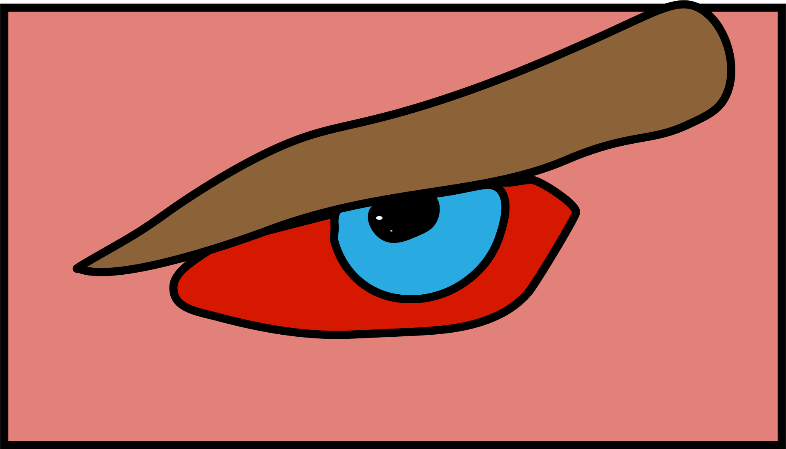
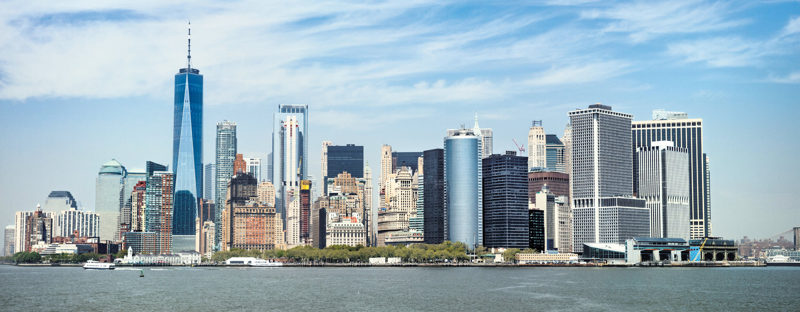
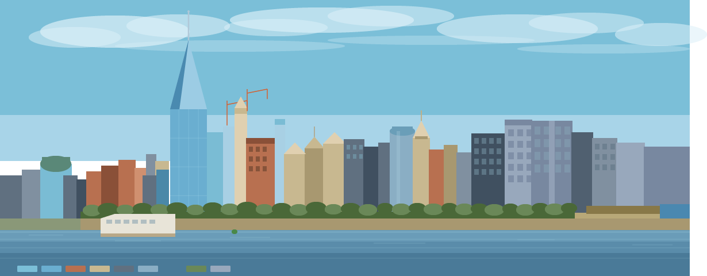

I chose the New York City skyline because it represents a city that truly never sleeps a place where ambition, energy, and culture collide at every hour of the day. From the towering One World Trade Center to the bustling waterfront, Manhattan's skyline tells the story of a city constantly reaching higher. New York is more than just buildings and streets; it's a feeling the electric buzz of millions of people chasing their dreams in the same place at the same time. There is simply nowhere else on earth that pulses with the same relentless life, creativity, and spirit that makes NYC iconic.